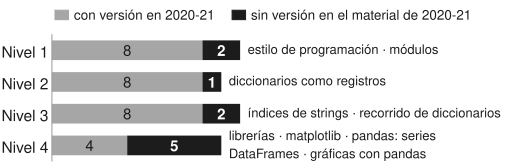
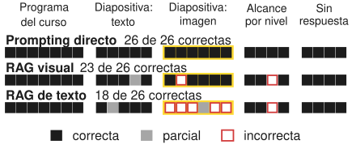
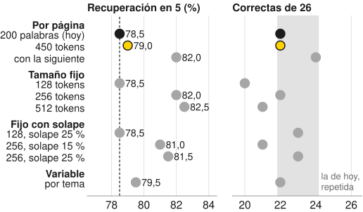
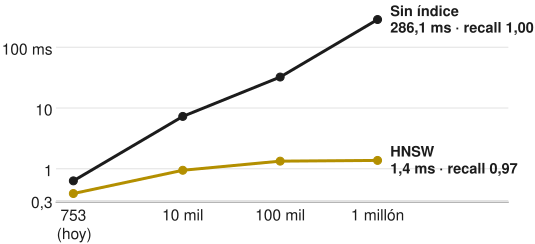

CupiTaller: actores y datos
Centro de tutorías de Introducción a la Programación. El curso tiene cuatro niveles y un monitor solo explica lo visto hasta el nivel del estudiante.
La bodega: reservas y encuestas
Constelación de 4 hechos y 10 dimensiones, sin atributos. La consulta el agente en R2 y R3.
Tres requerimientos sobre los documentos
¿Qué se dicta hoy en cada nivel y qué cambió?
monitores y profesoresdocumentos
¿Las reglas escritas siguen vigentes y se cumplen?
coordinacióndocumentosbodega
¿Qué temas preparo para la siguiente tutoría?
monitoresdocumentosbodegamodelo local
El curso cambia: tres versiones

Fig. 1. 10 de las 38 clases de hoy no existían en 2020-21.
Ingesta visual: el código está en imágenes

Texto del PDF
Con visión
def suma_recorrido_total_con_for_in_range(lista: list) -> int:
suma = 0
for i in range(0, len(lista)):
suma += lista[i]
return suma
Fig. 2. Palabras indexadas: 49.673 con visión, 23.203 sin ella.
Dos enfoques, un mismo modelo
Fig. 3. Tokens de entrada por consulta, con gpt-6-luna.
Resultados: 26 preguntas

Fig. 4. Cada cuadro es una pregunta.

Fig. 5. Costo por 1.000 consultas. Para R1: RAG visual.
Fragmentación: diez formas de partir

Fig. 6. Ninguna supera a la de hoy (McNemar, p ≥ 0,21). Se recomienda 450 tokens: rinde igual y no trunca fragmentos.
Latencia con y sin índice

Fig. 7. 5 vecinos en pgvector. Con un millón, HNSW es 200 veces más rápido.
Entropía documental: dos versiones
| Sin etiquetas | ✗✓✗✓✗✓ | 3 de 6 con la regla antigua |
| Con filtro | ✓✓✓✓–✓ | 0 de 6 |
Fig. 8. Seis reglas que cambiaron entre versiones.
Un agente híbrido para los tres requerimientos
Fig. 9. Cambia la pregunta, no el flujo. Los comentarios solo los lee el modelo local.